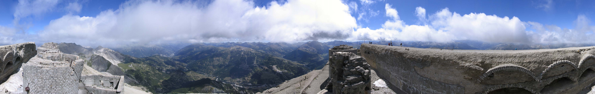

Panoramiche 360° · Chaberton
Pan 360° — dalla Torre n.4 (21 agosto 2004)
Panoramiche 360° Forte Chaberton

{kind=link}
[Home] [Panoramiche 360°]
Pan 360° da Torre n.4 Forte Chaberton (versione Java)
Clicca con il mouse per muoverti sulla panoramica.
21 agosto 2004 Questa panoramica 360° illustra tutto il punto di vista che possiamo avere salendo sulla torre n.4, spostando la vista in senso orario, vediamo sotto di noi l'infilata delle torri 5,6,7 e 8, sul fondo la punta Clotesse, la Valle di Susa fino ad Exilles, segue la cresta dell'Assietta, le piste di Sansicario e i lavori per la pista da Bob, sotto la strada Oulx-Cesana e sul fondo l'inizio della valle Argentera, a destra la valle del Thuras, sotto di noi le torri 3, 2 e 1. Segue a destra la lunga spianata con gli archi in pietra e cemento per livellare la montagna.
L'immagine presenta una dimensione di 6000x952 pix ed è stata compressa con formato jpg.
È
vietato ogni utilizzo non autorizzato delle foto.
Photos are copyright © Roberto Chirio: all rights reserved.